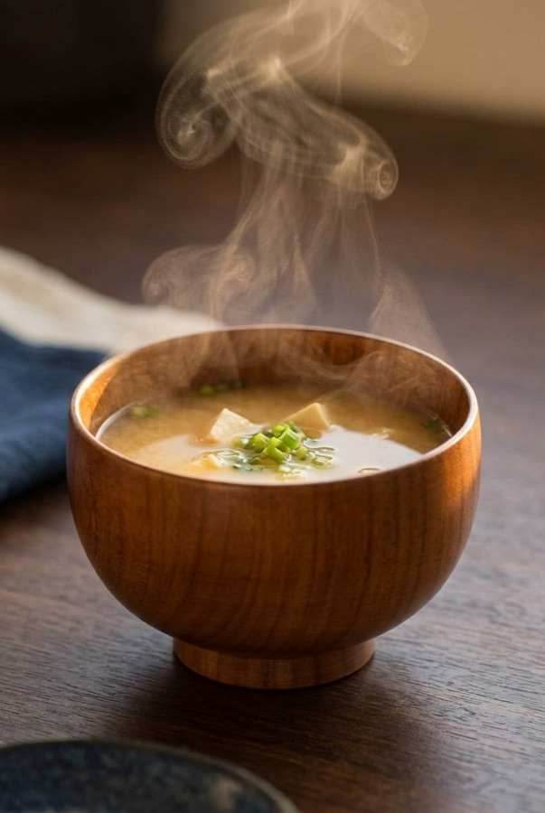

"Keeps food warm" is printed on half the bowls on Amazon and explained by almost none of them. This one comes down to a real, measurable material property, paired with a 450-year-old wood-turning craft. Here's how it actually works, and who it's for.
See current price on Amazon →As an Amazon Associate, I earn from qualifying purchases.
Wood has a thermal conductivity of roughly 0.1–0.2 W/m·K. Most ceramic tableware runs well above 1 W/m·K, and metal bowls run into the double digits. In plain terms: heat moves through wood far more slowly than it moves through ceramic or steel. That's why miso soup stays hotter, longer, in a wood bowl — and why the outside of the bowl stays comfortable to hold even right after you've ladled in something scalding.
Look at the base: it's lifted on a narrow turned foot, not sitting flat. That's not just a style choice — it keeps the warmest part of the bowl (the bottom, in direct contact with hot liquid) off the table and off your palm, the same functional logic behind the raised feet on traditional Japanese soup bowls generally.
This bowl comes from Yamanaka Onsen in Kaga City, Ishikawa Prefecture, a wood-turning tradition that dates back to the Azuchi-Momoyama period (1568–1600), around 450 years. Where a region like Wajima built its reputation on stacking dozens of lacquer layers, Yamanaka's craftsmen made their name on rokuro-hiki — turning the wood itself on a lathe with a precision fine enough to produce these thin, evenly curved walls. It's the only region in Japan with a public institute that trains artisans in both the wood-turning and the lacquering side by side.
Yamanaka Lacquerware, Shirasagi Bowl (S) — zelkova wood with a urethane coating in a warm amber-brown finish, made in Ishikawa, Japan. Approx. 3.9 in (10 cm) diameter.
See current price on Amazon →As an Amazon Associate, I earn from qualifying purchases.
This page contains an affiliate link — if you buy through it, it costs you nothing extra and helps support this site.